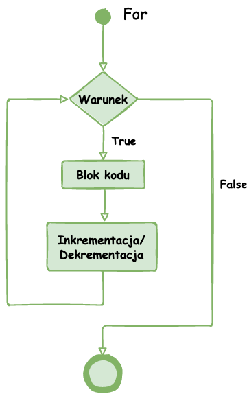
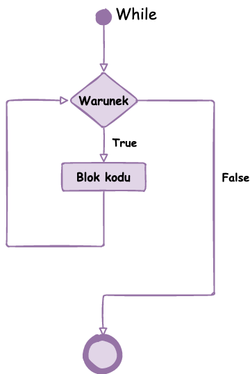

Konstrukcja: for(początek; warunek; krok) { instrukcje }
Opis: Pętla wykonuje kod określoną liczbę razy. Najczęściej używana, gdy znana jest liczba powtórzeń.
Schemat blokowy:

Konstrukcja: while(warunek) { instrukcje }
Opis: Pętla wykonuje kod, dopóki warunek jest prawdziwy. Warunek sprawdzany jest przed wejściem do pętli.
Schemat blokowy:

Konstrukcja: do { instrukcje } while(warunek);
Opis: Pętla zawsze wykona kod co najmniej raz, ponieważ warunek sprawdzany jest po wykonaniu instrukcji.
Schemat blokowy: